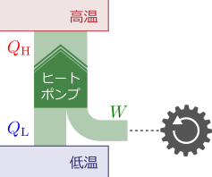
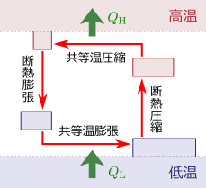
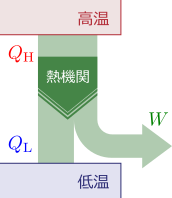

エアコンのエネルギー効率を最も高くする方法が知りたい。
ヒートポンプの効率には上限がありそう

ヒートポンプの最大効率を求めたい。ヒートポンプとは、右図のように、低温側から熱エネルギー
𝑄L
を奪い、高温側に熱エネルギー
𝑄H
を加える装置である。低温側はより低温になり、高温側はより高温になる。典型的な利用例はエアコンである（低温側にいる人から見れば冷房、高温側だと暖房）。外部から与えるエネルギー
𝑊
をなるべく少なくしつつ、汲み上げる熱エネルギー
𝑄L,𝑄H
を大きくしたいわけである。エネルギー保存則より
𝑄H=𝑄L+𝑊(1)
が成り立つ。（添え字HはHigh、LはLowの意味。）
ヒートポンプの原理
ヒートポンプの原理は、小さな容器
𝐴
（作業容器という）を用いて行う次の操作の繰り返しである：
低温側に作業容器𝐴を接触させる。→𝐴を膨張させ低温側から熱を奪う。→高温側に𝐴を接触させる。→𝐴を圧縮し高温側に熱を渡す。→(一番上に戻る)
ヒートポンプを継続的に動かすためには、何らかのサイクル構造を持つ必要がある。即ち、1サイクルごとに作業容器は元の状態に戻る。
可逆な場合に最大効率になりそう
効率が最高なのは、外部からエネルギーを与えずに温度を変えられること、即ち、
𝑊=0
であるが、これは実現できない。なぜなら、その過程は、不可逆過程である「熱接触によって温度が等しくなっていく過程」の逆過程だからである。逆に、効率が最悪なのは、低温側が存在しない場合、即ち、
𝑊=𝑄H
である（これはただのヒーターであってもはやヒートポンプではない）。これは容易に実現できる。例えば、エネルギー
𝑊
を全て摩擦熱や電気仕事として高温側に与えればよい。これらの過程は不可逆過程である。このように、「理想的な効率」は可逆性により禁止され、「最悪な効率」は不可逆過程で実現できる。どうやらヒートポンプの効率は可逆性と関係していそうである。実現可能な最大効率は、おそらく可逆な場合だろう。この章では、これを実際に示す：9.1ヒートポンプの最大効率9.2参考 熱を全て動力に変えることはできない
9.1ヒートポンプの最大効率
この節では、ヒートポンプの最大効率を与える不等式(6)および(7)を示す。エントロピーを考えて不等式を立てればよい。
9.1.1ヒートポンプによるエントロピーの変化：式(5)
ヒートポンプによってやり取りされる熱エネルギー
𝑄L,𝑄H
に対する不等式を立てよう。
エントロピーに対する不等式(2)
ヒートポンプを含む系は、低温部・高温部という2つの容器から構成される。よって、全エントロピー
𝑆
はそれぞれの容器のエントロピー
𝑆L,𝑆H
の和となる。その微小変化は、
𝛿𝑆=𝛿𝑆L+𝛿𝑆H
である。孤立系のエントロピーは減少させることができないことから、以下の不等式が得られる：
0≤𝛿𝑆=𝛿𝑆L+𝛿𝑆H(2)
等式が成り立つのは、可逆な場合である。以下では、
𝛿𝑆
はヒートポンプの1サイクルでのエントロピーの変化とし、
𝛿𝑆L,𝛿𝑆H
をまとめて
𝛿𝑆𝑖
（
𝑖∈{L,H}
）と表すことにする。ヒートポンプ装置自体もエントロピーを持つ（作業容器を持つため）。しかし、1サイクル後には元に戻っているので、エントロピー変化を考える上では無視してよい。
𝛿𝑆𝑖 と 𝛿𝑄𝑖 の関係式を求める
式(2)を、熱エネルギー
𝑄L,𝑄H
に対する不等式にしたい。そのためには、
𝛿𝑆𝑖
と
𝑄𝑖
の関係式があればよい。エントロピーの微小変化
𝛿𝑆𝑖
は、エントロピーの定義式（5.1節）を用いて
𝛿𝑆𝑖≐1𝑇𝑖(𝛿𝑈𝑖+𝑃𝑖𝛿𝑉𝑖)∣体積は変化しないので𝛿𝑉𝑖=0=1𝑇𝑖𝛿𝐸𝑖(3)
となる。以下、ヒートポンプの1サイクルでの熱の移動は、
𝑇𝑖
が変化しない程度に小さいとする。そうすれば上式が良い精度で成り立つ。
𝛿𝑈𝑖
は各容器のエネルギーの変化なので、章の冒頭の
𝛿𝑄L,𝛿𝑄H
（微小量なので
𝛿
を付けた）を使って表すことができる：
𝛿𝑈L=−𝛿𝑄L𝛿𝑈H=𝛿𝑄H}(4)
𝛿𝑄𝑖 に対する不等式(5)
以上により、
𝛿𝑄L,𝛿𝑄H
に対する不等式を得るには、式(2)に、式(3), (4)を代入すればよい：
𝛿𝑄L𝑇L≤𝛿𝑄H𝑇H(5)
𝛿𝑄L
は低温部から奪った熱エネルギー、
𝛿𝑄H
は高温部に与えた熱エネルギーである。等式は、可逆な場合に成り立つ。
9.1.2ヒートポンプ（暖房）の効率：式(6)
それでは式(5)を使って、ヒートポンプの最大効率を考えよう。まず暖房の場合である。
𝛿𝑊 と 𝛿𝑄H の不等式を求める
外部から与えたエネルギー
𝛿𝑊
に対して、どれだけの熱エネルギー
𝛿𝑄H
を高温側に加えられるかが知りたい。即ち、式(5)を、
𝛿𝑊
と
𝛿𝑄H
の式にしたい。そのためには、エネルギーの関係式(1)：
𝛿𝑄L=𝛿𝑄H−𝛿𝑊
を、式(5)に代入して
𝛿𝑄L
を消去すればよい：
𝛿𝑄H≤𝑇H𝑇H−𝑇L𝛿𝑊(6)
効率が最大になるのは、等式が成り立つ場合であり、可逆な場合に成り立つ。最大成績係数最大効率に対応する赤字部分を最大成績係数という。最大成績係数は、常に1より大きい。よって、任意の温度で、費やしたエネルギー
𝛿𝑊
よりも多くの熱エネルギー
𝛿𝑄H
を汲み上げることができる。なお、
𝑇H=𝑇L
の時、最大成績係数は発散する。これは、「低温側（同じ温度だが便宜上そう呼ぶ）から熱を奪うのに必要なエネルギー」と「高温側に熱を与えるのに必要なエネルギー」が打ち消しあって
𝛿𝑊=0
になることによる（可逆操作の場合）。
9.1.3ヒートポンプ（冷房）の効率：式(7)
次は冷房の最大効率である。
𝛿𝑊 と 𝛿𝑄L の不等式を求める
外部から与えたエネルギー
𝛿𝑊
に対して、どれだけの熱エネルギー
𝛿𝑄L
を低音側から奪えるかが知りたい。式(5)にエネルギーの関係式
𝛿𝑄H=𝛿𝑄L+𝛿𝑊
を代入して
𝛿𝑄H
を消去すればよい：
𝛿𝑄L≤𝑇L𝑇H−𝑇L𝛿𝑊(7)
この場合も、効率が最大になるのは等式が成り立つ場合であり、可逆な場合に成り立つ。
𝑇H<2𝑇L
の場合、即ち
𝑇H
と
𝑇L
が十分近い場合、赤字部分（最大成績係数）は1より大きくなり、費やしたエネルギー
𝛿𝑊
よりも多くの熱エネルギー
𝛿𝑄L
を奪うことができる。
9.1.4最大効率の例：逆カルノーサイクル
ヒートポンプの最大効率は、可逆な場合に達成できることが分かった。そのような可逆なヒートポンプは、原理的に構成することができる。実際、以下の【9.1-注1】のような逆カルノーサイクルを使えばよい。これは、冒頭で述べたヒートポンプのサイクルを可逆過程だけで構成したものである。
【9.1-注1】逆カルノーサイクル

逆カルノーサイクルは、右図のようなヒートポンプサイクルである。全ての操作は準静的に行われる。共等温膨張によって低温側からエネルギー
𝑄L
を吸収し、共等温圧縮によって高温側にエネルギー
𝑄H
を放出する。色が同じ個所は同じ温度である。可逆であるため、最大の効率を持つ、即ち、式(6)および式(7)の等号が成立する。逆カルノーサイクルの効率は最大ではあるが、可逆性を持たせるためには非常にゆっくり動かす必要があるので、時間的な効率という点では最悪である。
カルノーサイクル
なお、これを逆にたどるようなサイクルを、カルノーサイクルという。これは、用意された低温源と高温源から力学的なエネルギーを最大効率で取りだすサイクルであり、次節で述べる熱機関の例である。
9.2参考 熱を全て動力に変えることはできない
熱機関

ところで、ヒートポンプは外部エネルギーを温度差に変換するものであったが、逆向きに作動させると、温度差を力学的なエネルギー
𝑊
に変換する装置としても使える（右図）。このように熱を動力に変換する装置を、熱機関という。
第二種永久機関
特に興味があるのは、高温側から奪った熱
𝑄H
を全て
𝑊
に変換できることが可能かという問題である（
𝑊=𝑄H
）。この場合、
𝑄L
低温側は不要になり（あったとしても触媒的にしか作用しない）、高温熱源だけから
𝑊
を取り出すようなサイクルがあることになる。即ち、温度差が不要なエンジンが作れることになる。そうすれば、例えば、空気や地面から熱を奪って運動エネルギーに変換することにより、事実上、燃料なしで永久に動き続ける車が作れるのではないか、という期待が生まれるわけである。このような熱機関を第二種永久機関という。
この節では、第二種永久機関が不可能であることを示す。なお、第一種永久機関というのもあるが、これは、エネルギー保存則を破ってエネルギーを生成するような装置であり、これも不可能である。第二種永久機関のほうはエネルギー保存則を破らない。
9.2.1第二種永久機関は存在しない：式(8)
熱機関の場合、式(5)に対応する式は
−𝛿𝑄L𝑇L≤−𝛿𝑄H𝑇H
である（エネルギーの流れの方向が逆になっているので、符号も逆になる）。これに、エネルギー保存を表す
𝛿𝑄H=𝛿𝑄L+𝛿𝑊
を用いて
𝛿𝑄L
を消去すると
𝛿𝑊≤𝑇H−𝑇L𝑇H𝛿𝑄H(8)
となる。赤字部分を最大熱効率といい、常に1よりも小さな値である。即ち、奪った熱
𝛿𝑄H
の全てを運動エネルギー
𝛿𝑊
に変えるようなサイクルは存在せず、必ず、低温熱源に熱を捨てなければならない。よって、第二種永久機関は存在しない。
最大熱効率が実現するのは、可逆な場合である。例えば、【9.1-注1】の最後で触れたカルノーサイクルがそうである。逆に、熱効率が最悪なのは、高温熱源から低温熱源にそのまま熱を捨てる場合であり、
𝛿𝑊=0
となる。